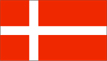

{kind=link}


![[Country map of Denmark]](../maps/da-map.jpg)
| Denmark |  |
|
|
|
|
| Introduction |
Background: Once the seat of Viking raiders and later a major north European power, Denmark has evolved into a modern, prosperous nation that is participating in the political and economic integration of Europe. So far, however, the country has opted out of some aspects of the European Union's Maastricht Treaty, including the new joint monetary system.
| Geography |
Location: Northern Europe, bordering the Baltic Sea and the North Sea, on a peninsula north of Germany
Geographic coordinates: 56 00 N, 10 00 E
Map references: Europe
Area:
total:
43,094 sq km
land:
42,394 sq km
water:
700 sq km
note:
includes the island of Bornholm in the Baltic Sea and the rest of metropolitan Denmark, but excludes the Faroe Islands and Greenland
Area - comparative: slightly less than twice the size of Massachusetts
Land boundaries:
total:
68 km
border countries:
Germany 68 km
Coastline: 7,314 km
Maritime claims:
contiguous zone:
24 nm
continental shelf:
200-m depth or to the depth of exploitation
exclusive economic zone:
200 nm
territorial sea:
12 nm
Climate: temperate; humid and overcast; mild, windy winters and cool summers
Terrain: low and flat to gently rolling plains
Elevation extremes:
lowest point:
Lammefjord -7 m
highest point:
Ejer Bavnehoj 173 m
Natural resources: petroleum, natural gas, fish, salt, limestone, stone, gravel and sand
Land use:
arable land:
60%
permanent crops:
0%
permanent pastures:
5%
forests and woodland:
10%
other:
25% (1993 est.)
Irrigated land: 4,350 sq km (1993 est.)
Natural hazards: flooding is a threat in some areas of the country (e.g., parts of Jutland, along the southern coast of the island of Lolland) that are protected from the sea by a system of dikes
Environment - current issues: air pollution, principally from vehicle and power plant emissions; nitrogen and phosphorus pollution of the North Sea; drinking and surface water becoming polluted from animal wastes and pesticides
Environment - international agreements:
party to:
Air Pollution, Air Pollution-Nitrogen Oxides, Air Pollution-Sulphur 85, Air Pollution-Sulphur 94, Air Pollution-Volatile Organic Compounds, Antarctic Treaty, Biodiversity, Climate Change, Desertification, Endangered Species, Environmental Modification, Hazardous Wastes, Marine Dumping, Marine Life Conservation, Nuclear Test Ban, Ozone Layer Protection, Ship Pollution, Tropical Timber 83, Tropical Timber 94, Wetlands, Whaling
signed, but not ratified:
Air Pollution-Persistent Organic Pollutants, Antarctic-Environmental Protocol, Climate Change-Kyoto Protocol, Law of the Sea
Geography - note: controls Danish Straits (Skagerrak and Kattegat) linking Baltic and North Seas; about one-quarter of the population lives in Copenhagen
| People |
Population: 5,336,394 (July 2000 est.)
Age structure:
0-14 years:
18% (male 505,820; female 479,815)
15-64 years:
67% (male 1,802,665; female 1,755,633)
65 years and over:
15% (male 330,055; female 462,406) (2000 est.)
Population growth rate: 0.31% (2000 est.)
Birth rate: 12.16 births/1,000 population (2000 est.)
Death rate: 11 deaths/1,000 population (2000 est.)
Net migration rate: 1.95 migrant(s)/1,000 population (2000 est.)
Sex ratio:
at birth:
1.05 male(s)/female
under 15 years:
1.05 male(s)/female
15-64 years:
1.03 male(s)/female
65 years and over:
0.71 male(s)/female
total population:
0.98 male(s)/female (2000 est.)
Infant mortality rate: 5.11 deaths/1,000 live births (2000 est.)
Life expectancy at birth:
total population:
76.54 years
male:
73.95 years
female:
79.27 years (2000 est.)
Total fertility rate: 1.73 children born/woman (2000 est.)
Nationality:
noun:
Dane(s)
adjective:
Danish
Ethnic groups: Scandinavian, Inuit, Faroese, German
Religions: Evangelical Lutheran 97%, other Protestant and Roman Catholic, other
Languages:
Danish, Faroese, Greenlandic (an Inuit dialect), German (small minority)
note:
English is the predominant second language
Literacy:
definition:
age 15 and over can read and write
total population:
100%
male:
NA%
female:
NA%
| Government |
Country name:
conventional long form:
Kingdom of Denmark
conventional short form:
Denmark
local long form:
Kongeriget Danmark
local short form:
Danmark
Data code: DA
Government type: constitutional monarchy
Capital: Copenhagen
Administrative divisions:
metropolitan Denmark - 14 counties (amter, singular - amt) and 2 kommunes*; Arhus, Bornholm, Fredericksberg*, Frederiksborg, Fyn, Kobenhavn, Kobenhavns*, Nordjylland, Ribe, Ringkobing, Roskilde, Sonderjylland, Storstrom, Vejle, Vestsjalland, Viborg
note:
in addition there are 275 local kommunes not considered first-order administrative units; see separate entries for the Faroe Islands and Greenland, which are part of the Kingdom of Denmark and are self-governing administrative divisions
Independence: first organized as a unified state in 10th century; in 1849 became a constitutional monarchy
National holiday: Birthday of the Queen, 16 April (1940)
Constitution: 1849 was the original constitution; there was a major overhaul 5 June 1953, allowing for a unicameral legislature and a female chief of state
Legal system: civil law system; judicial review of legislative acts; accepts compulsory ICJ jurisdiction, with reservations
Suffrage: 18 years of age; universal
Executive branch:
chief of state:
Queen MARGRETHE II (since 14 January 1972); Heir Apparent Crown Prince FREDERIK, elder son of the monarch (born 26 May 1968)
head of government:
Prime Minister Poul Nyrup RASMUSSEN (since 25 January 1993)
cabinet:
Cabinet appointed by the monarch
elections:
none; the monarch is hereditary; prime minister appointed by the monarch
Legislative branch:
unicameral Parliament or Folketing (179 seats; members are elected by popular vote on the basis of proportional representation to serve four-year terms)
elections:
last held 11 March 1998 (next to be held NA 2002)
election results:
percent of vote by party - NA; seats by party - progovernment parties: Social Democratic Party 65, Socialist People's Party 13, Radical Liberal Party 7, Unity Party 5; opposition: Liberal Party 43, Conservative Party 17, Danish People's Party 13, Center Democratic Party 8, Christian People's Party 4, Progress Party 4
Judicial branch: Supreme Court, judges are appointed by the monarch for life
Political parties and leaders: Center Democratic Party [Mimi JAKOBSEN]; Christian People's Party [Jann SJURSEN]; Conservative Party [Bendt BENDTSEN]; Conservative People's Party [Pia Christmas MOLLER]; Danish People's Party [Pia KJAERSGAARD]; Liberal Party [Anders Fogh RASMUSSEN]; Progress Party [Aage BRUSGAARD]; Radical Liberal Party [Marianne JELVED]; Social Democratic Party [Poul Nyrup RASMUSSEN]; Social Liberal Party [Johannes LEBECH]; Socialist People's Party [Holger K. NIELSEN]; Unity Party [no leader]
International organization participation: AfDB, AsDB, Australia Group, BIS, CBSS, CCC, CE, CERN, EAPC, EBRD, ECE, EIB, ESA, EU, FAO, G- 9, IADB, IAEA, IBRD, ICAO, ICC, ICFTU, ICRM, IDA, IEA, IFAD, IFC, IFRCS, IHO, ILO, IMF, IMO, Inmarsat, Intelsat, Interpol, IOC, IOM, ISO, ITU, NATO, NC, NEA, NIB, NSG, OECD, OPCW, OSCE, PCA, UN, UNCTAD, UNESCO, UNHCR, UNIDO, UNIKOM, UNMIBH, UNMIK, UNMOGIP, UNMOP, UNMOT, UNOMIG, UNTAET, UNTSO, UPU, WEU (observer), WHO, WIPO, WMO, WTrO, ZC
Diplomatic representation in the US:
chief of mission:
Ambassador Knud-Erik TYGESEN
chancery:
3200 Whitehaven Street NW, Washington, DC 20008
telephone:
[1] (202) 234-4300
FAX:
[1] (202) 328-1470
consulate(s) general:
Chicago, Los Angeles, and New York
Diplomatic representation from the US:
chief of mission:
Ambassador Edward E. ELSON
embassy:
Dag Hammarskjolds Alle 24, 2100 Copenhagen
mailing address:
PSC 73, APO AE 09716
telephone:
[45] 35 55 31 44
FAX:
[45] 35 43 02 23
Flag description: red with a white cross that extends to the edges of the flag; the vertical part of the cross is shifted to the hoist side, and that design element of the Dannebrog (Danish flag) was subsequently adopted by the other Nordic countries of Finland, Iceland, Norway, and Sweden
| Economy |
Economy - overview: This thoroughly modern market economy features high-tech agriculture, up-to-date small-scale and corporate industry, extensive government welfare measures, comfortable living standards, and high dependence on foreign trade. Denmark is a net exporter of food. The center-left coalition government is concentrating on reducing the unemployment rate and the budget deficit as well as following the previous government's policies of maintaining low inflation and a current account surplus. The coalition also vows to maintain a stable currency. The coalition has lowered marginal income tax rates while maintaining overall tax revenues; boosted industrial competitiveness through labor market and tax reforms; increased research and development funds; and improved welfare services for the neediest while cutting paperwork and delays. Denmark chose not to join the 11 other EU members who launched the euro on 1 January 1999.
GDP: purchasing power parity - $127.7 billion (1999 est.)
GDP - real growth rate: 1.3% (1999 est.)
GDP - per capita: purchasing power parity - $23,800 (1999 est.)
GDP - composition by sector:
agriculture:
4%
industry:
27%
services:
69% (1997)
Population below poverty line: NA%
Household income or consumption by percentage share:
lowest 10%:
3.6%
highest 10%:
20.5% (1992)
Inflation rate (consumer prices): 2.5% (1999 est.)
Labor force: 2.896 million
Labor force - by occupation: services 71%, industry 25%, agriculture 4% (1997 est.)
Unemployment rate: 5.7% (1999 est.)
Budget:
revenues:
$59.7 billion
expenditures:
$57.6 billion, including capital expenditures of $NA (1997 est.)
Industries: food processing, machinery and equipment, textiles and clothing, chemical products, electronics, construction, furniture, and other wood products, shipbuilding
Industrial production growth rate: 1.5% (1999 est.)
Electricity - production: 40.277 billion kWh (1998)
Electricity - production by source:
fossil fuel:
90.8%
hydro:
0.07%
nuclear:
0%
other:
9.13% (1998)
Electricity - consumption: 33.037 billion kWh (1998)
Electricity - exports: 7.1 billion kWh (1998)
Electricity - imports: 2.68 billion kWh (1998)
Agriculture - products: grain, potatoes, rape, sugar beets; beef, dairy products; fish
Exports: $49.5 billion (f.o.b., 1999)
Exports - commodities: machinery and instruments, meat and meat products, fuels, dairy products, ships, fish, chemicals
Exports - partners: EU 66.6% (Germany 21.4%, Sweden 11.2%, UK 9.2%, France 5.3%, Netherlands 4.5%), Norway 6.0%, US 4.7% (1998)
Imports: $43.9 billion (f.o.b., 1999)
Imports - commodities: machinery and equipment, petroleum, chemicals, grain and foodstuffs, textiles, paper
Imports - partners: EU 72.5% (Germany 22.5%, Sweden 12.9%, UK 7.9%, France 5.9%), Norway 4.6%, US 4.1% (1998)
Debt - external: $44 billion (1996 est.)
Economic aid - donor: ODA, $1.6 billion (1997)
Currency: 1 Danish krone (DKr) = 100 oere
Exchange rates: Danish kroner (DKr) per US$1 - 7.336 (January 2000), 6.976 (1999), 6.701 (1998), 6.604 (1997), 5.799 (1996), 5.602 (1995)
Fiscal year: calendar year
| Communications |
Telephones - main lines in use: 3.203 million (1995)
Telephones - mobile cellular: 1.347 million (1999)
Telephone system:
excellent telephone and telegraph services
domestic:
buried and submarine cables and microwave radio relay form trunk network, 4 cellular radio communications systems
international:
18 submarine fiber-optic cables linking Denmark with Norway, Sweden, Russia, Poland, Germany, Netherlands, UK, Faroe Islands, Iceland, and Canada; satellite earth stations - 6 Intelsat, 10 Eutelsat, 1 Orion, 1 Inmarsat (Blaavand-Atlantic-East); note - the Nordic countries (Denmark, Finland, Iceland, Norway, and Sweden) share the Danish earth station and the Eik, Norway, station for world-wide Inmarsat access
Radio broadcast stations: AM 2, FM 355, shortwave 0 (1998)
Radios: 6.02 million (1997)
Television broadcast stations: 42 (plus 44 repeaters) (September 1995)
Televisions: 3.121 million (1997)
Internet Service Providers (ISPs): 12 (1999)
| Transportation |
Railways:
total:
2,859 km (508 km privately owned and operated)
standard gauge:
2,859 km 1.435-m gauge (600 km electrified; 760 km double track) (1998)
Highways:
total:
71,437 km
paved:
71,437 km (including 843 km of expressways)
unpaved:
0 km (1998 est.)
Waterways: 417 km
Pipelines: crude oil 110 km; petroleum products 578 km; natural gas 700 km
Ports and harbors: Alborg, Arhus, Copenhagen, Esbjerg, Fredericia, Grena, Koge, Odense, Struer
Merchant marine:
total:
336 ships (1,000 GRT or over) totaling 5,190,227 GRT/6,815,128 DWT
ships by type:
bulk 12, cargo 132, chemical tanker 22, container 70, liquified gas 26, livestock carrier 6, petroleum tanker 24, rail car carrier 1, refrigerated cargo 13, roll-on/roll-off 19, short-sea passenger 8, specialized tanker 3 (1999 est.)
note:
Denmark has created its own internal register, called the Danish International Ship register (DIS); DIS ships do not have to meet Danish manning regulations, and they amount to a flag of convenience within the Danish register (1998 est.)
Airports: 118 (1999 est.)
Airports - with paved runways:
total:
28
over 3,047 m:
2
2,438 to 3,047 m:
7
1,524 to 2,437 m:
3
914 to 1,523 m:
13
under 914 m:
3 (1999 est.)
Airports - with unpaved runways:
total:
90
1,524 to 2,437 m:
1
914 to 1,523 m:
7
under 914 m:
82 (1999 est.)
| Military |
Military branches: Royal Danish Army, Royal Danish Navy, Royal Danish Air Force, Home Guard
Military manpower - military age: 20 years of age
Military manpower - availability:
males age 15-49:
1,299,250 (2000 est.)
Military manpower - fit for military service:
males age 15-49:
1,113,378 (2000 est.)
Military manpower - reaching military age annually:
males:
30,471 (2000 est.)
Military expenditures - dollar figure: $2.822 billion (FY98)
Military expenditures - percent of GDP: 1.7% (FY98)
| Transnational Issues |
Disputes - international: Rockall continental shelf dispute involving Iceland, Ireland, and the UK (Ireland and the UK have signed a boundary agreement in the Rockall area)